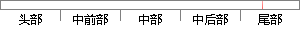

uart_print("\n");
片段位置图

相似结果
相似片段：最佳答案: void uart_print(char * str) { // 如果传入的参数是一个空指针,那么这个函数就什么都不干,直接返回 if(str == 0) return; // 判断有没...
| 标题 | 《求解这段程序怎么理解?_百度知道》 |
| 对比库 | PaperRater云论文库 |
| 网址 | http://zhidao.baidu.com/link?url=ZjduPe8R59hu18Zj5Gn9BA3RXS-y-II2hJZhNPW9-kMBPt9D-XDm50fB-WGtrM7i6zGg7rMB9ThVpBNlEMmn84fESO_0hcxGURfVre44udq |
| 相似率 | 100% （严重抄袭） |